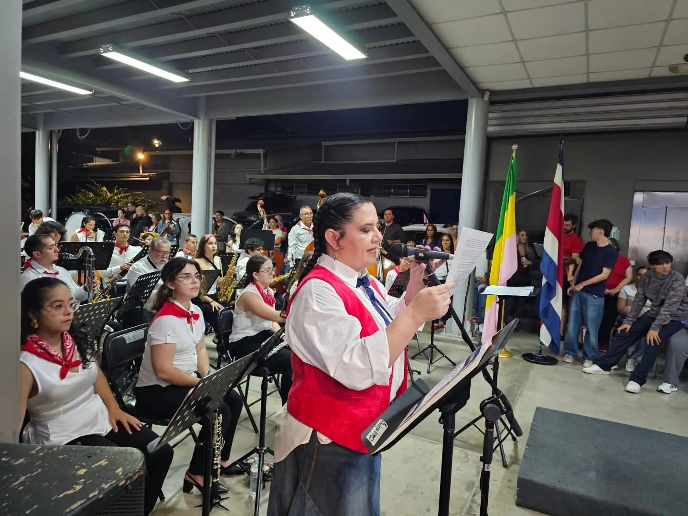
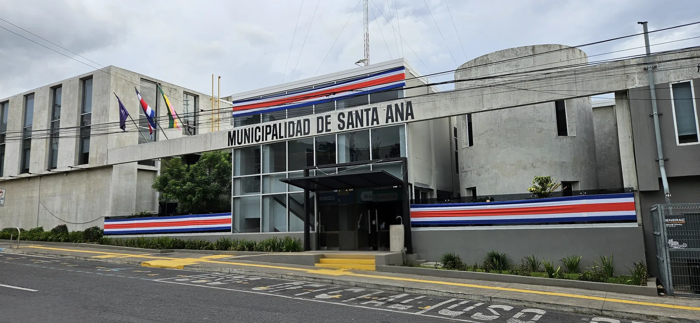
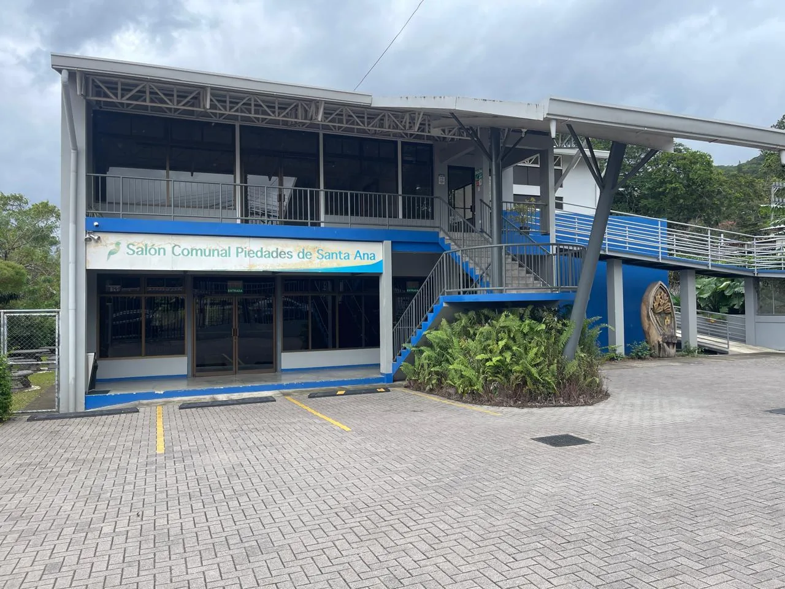
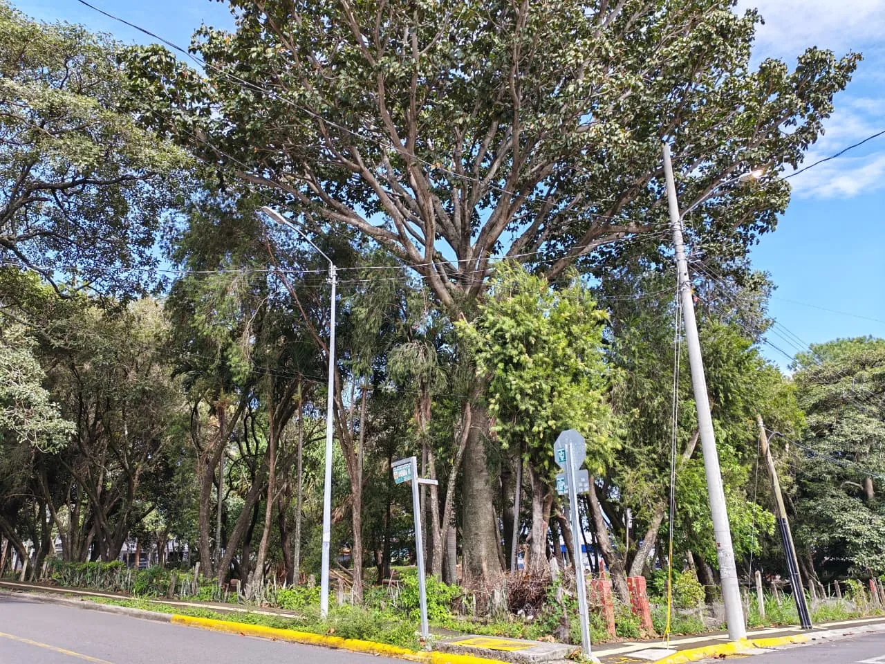
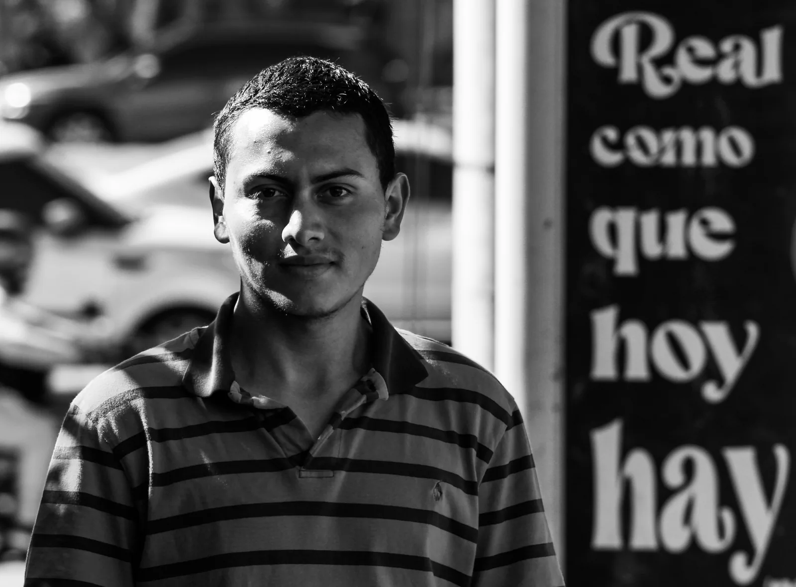
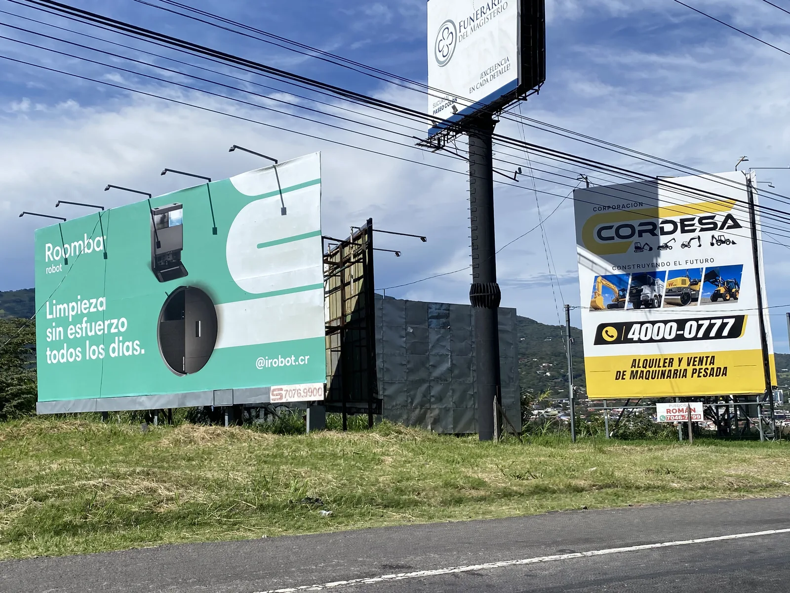
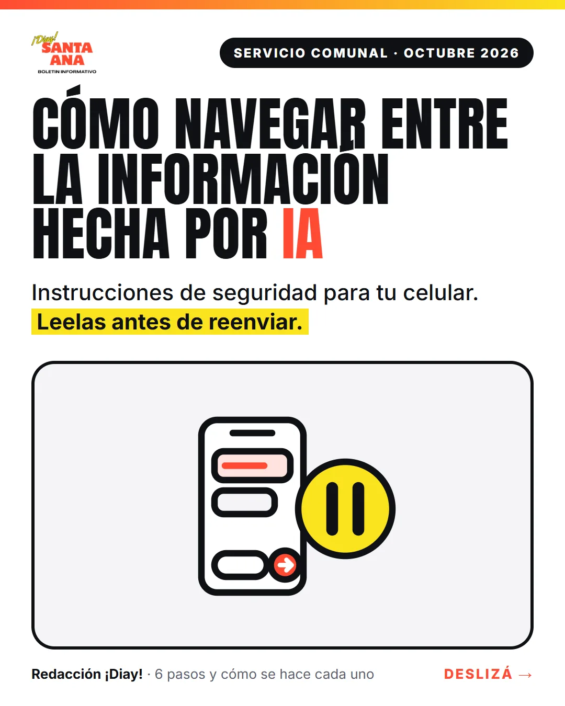

Agenda
Ver la agenda completaTitulares
9 notas · Octubre 2026

Crear también es ejercer la libertad
El discurso completo de la EMAI al recibir la antorcha: la libertad como un legado que se cuida, y el arte como una forma de ejercerla.

Un presupuesto de ₡21.436.464.205 y la basura rumbo a Limón
El presupuesto 2027 pasó por unanimidad tras dictámenes seis a uno. La basura irá a un relleno en Limón. Y otras dos votaciones divididas.

Acompañar para aprender
El programa Horizontes dará refuerzo en matemáticas, lectura y escritura a niñas y niños de la Escuela Ezequiel Morales Aguilar, en el salón comunal de Piedades.

Más que cemento: el valor de los espacios verdes en nuestras comunidades
Los árboles y los parques no son un lujo: son infraestructura para la vida. La reciente tala en Santa Ana Centro obliga a preguntarse qué cantón queremos.

12 de octubre: Día de las Culturas
Celebrar la diversidad también es reconocer los aportes de los pueblos indígenas y afrodescendientes, y comprometerse con una convivencia sin racismo.

Recuperemos el paisaje: contra la contaminación visual en Santa Ana
Santa Ana regula los rótulos desde 2003, pero las vallas y las pantallas gigantes siguen creciendo. ¿Ese reglamento protege el paisaje o solo existe en el papel?
Contraloría imprueba presupuesto extraordinario de ₡1.400 millones de la Municipalidad de Santa Ana
La Contraloría no encontró el acuerdo expreso del Concejo que aprobara la liquidación de 2025. El dinero no desapareció, pero no puede ejecutarse así.

Cómo navegar entre la información hecha por IA
Seis pasos para distinguir lo hecho con IA antes de reenviarlo. Pasalos con el dedo, o descargá la guía para guardarla en el celular o imprimirla.

Agenda de octubre y noviembre
El Festival Internacional de Música Barroca, Fuenteovejuna, Dido & Æneas, una tarde para personas adultas mayores, la Lindora Run y los Juegos Comunales.
¿Qué te pareció esta edición?
Contanos qué te sirvió, qué falta y qué deberíamos investigar el próximo mes. Nos toma un minuto leerlo y nos cambia la edición que viene.
Dejanos tu opinión